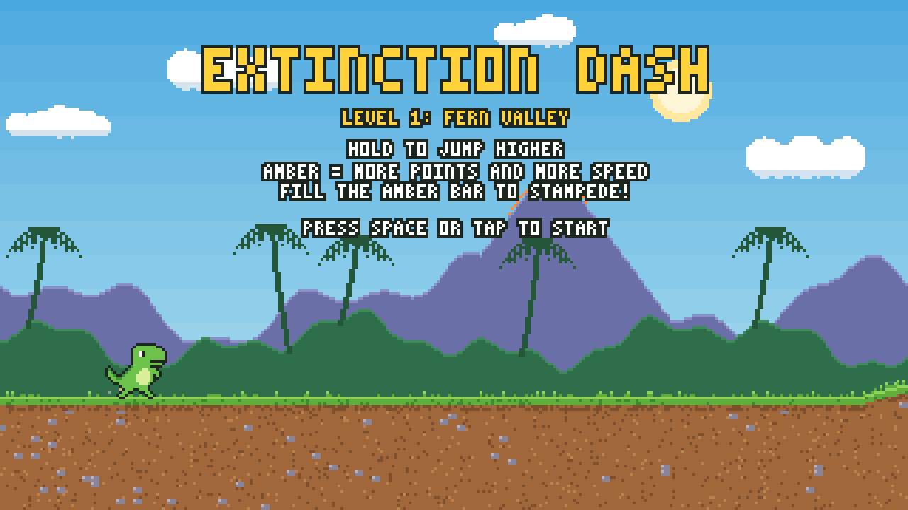
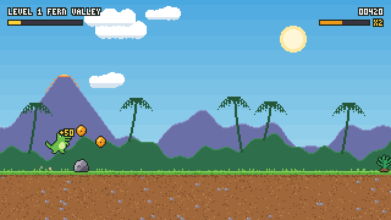
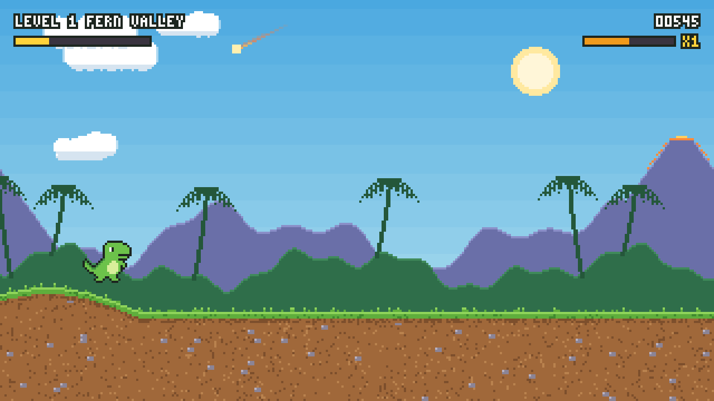
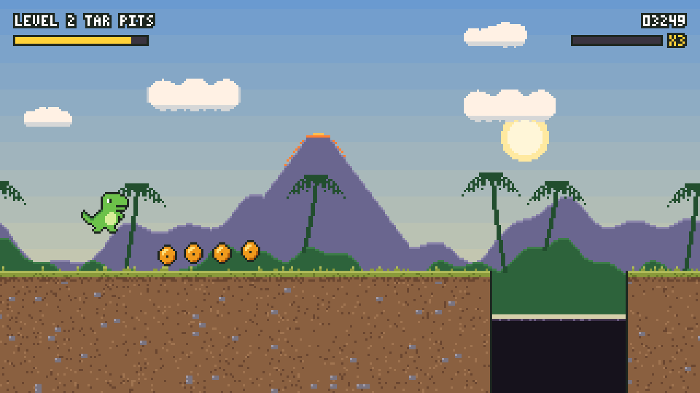
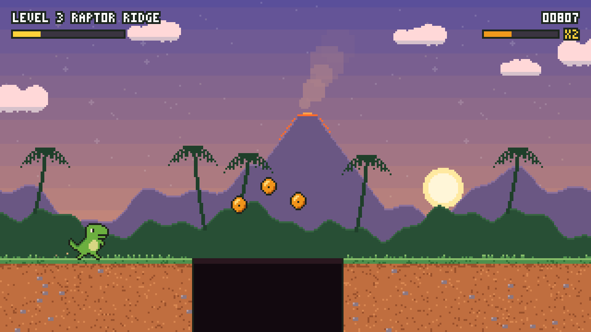
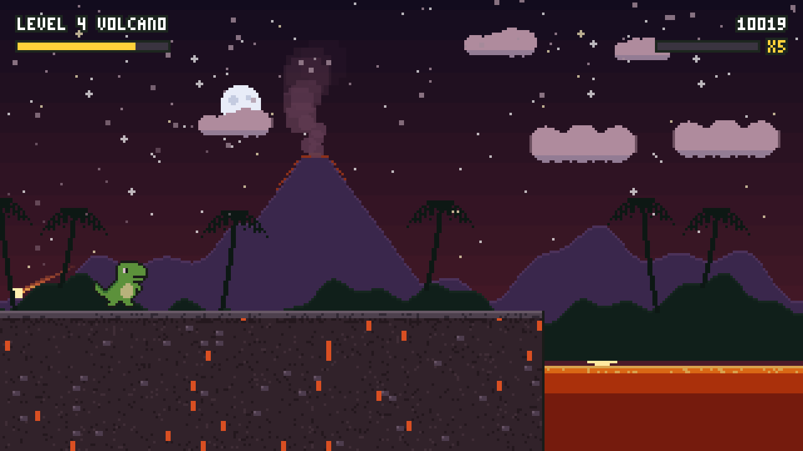
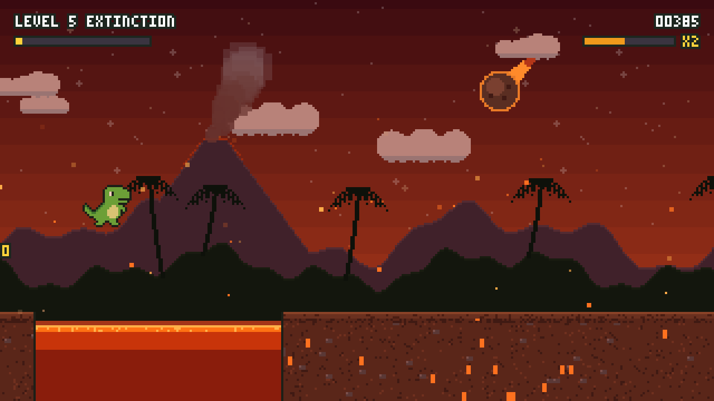
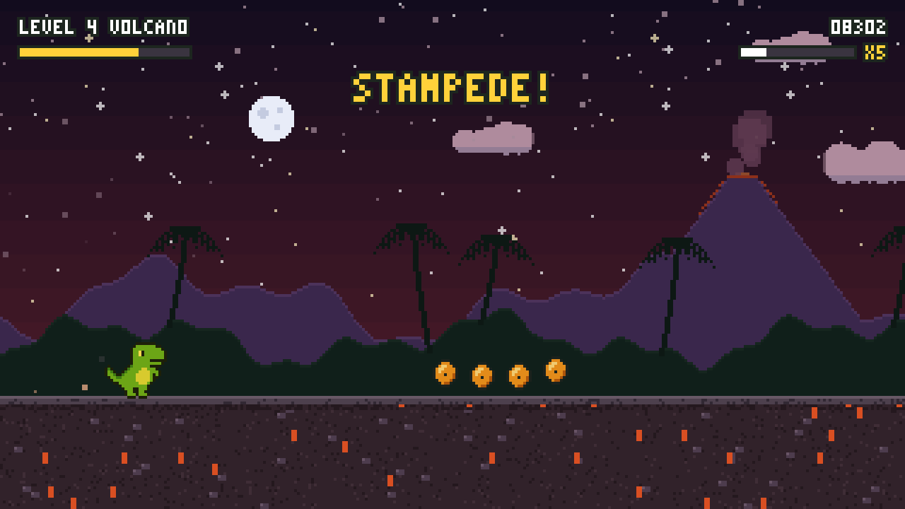
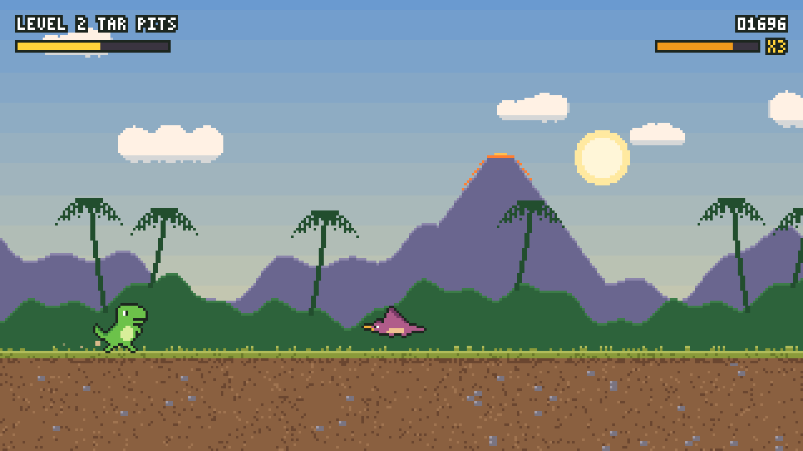
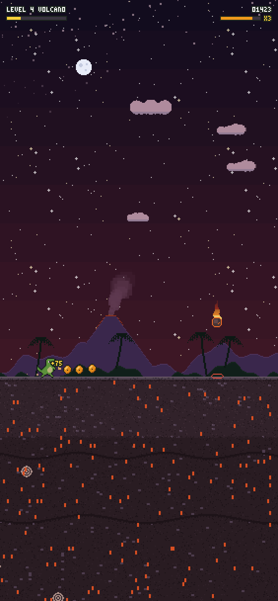

The idea
One button, five levels, one meteor. Tap to hop, hold to jump higher. Each level is faster than the last and brings new hazards, and the final level plays out under the meteor itself, growing in the sky as you near the finish.
The twist is Amber Rush. Amber with a mosquito inside is scattered along the run, often in risky spots. Collecting it in a chain raises a multiplier that boosts both your points and your speed, so greed makes the game harder. Fill the amber bar and the dino goes into a Stampede.
Levels run straight into each other past a finish flag, with no loading screens. Dying restarts the current level with the score you had when you reached it.

See it play

Twenty seconds from the real game, four from each level, played by its built-in autoplay test mode. Silent here; the game has retro sound effects.
The numbers
Five levels

1. Fern ValleySpeed 8 → 10.5
Rocks, ferns and logs over rolling hills and low ledges. Teaches the jump.

2. Tar PitsSpeed 10.5 → 13
Tar pits to clear, pterodactyls flying low (jump) or high (stay down), and the first back-to-back hazards.

3. Raptor RidgeSpeed 13 → 15.5
Sunset. Two-unit cliffs that only a full jump clears, stairs, and wider chasms.

4. VolcanoSpeed 15.5 → 18
Night under falling ash. Lava pits, and flaming boulders that drop wherever a red marker blinks.

5. ExtinctionSpeed 18 → 21
Everything at once, with less time between hazards, under a meteor that grows as you near the finish.
Amber Rush
- Chain it. Every 5 amber in a row raises the multiplier, up to ×5. Each tier adds 5% speed as well as points.
- Miss it, lose it. Let an amber go past and you drop a tier, so the arcs over pits and boulders become a real gamble.
- Stampede. 16 amber fill the rush bar: 5 seconds of +35% speed in which the dino smashes obstacles for bonus points, runs straight over pits, climbs ledges and pulls in nearby amber.


Fair at any speed
- Gaps are measured in seconds. Every hazard is followed by 0.8 to 1.8 seconds of flat run-up, sized for the fastest multiplier, so going faster never cuts your reaction time below the minimum.
- Pits are timed against the slowest speed, so a faster dino only finds them easier.
- Combos are spaced against the jump arc: after a pit or a ledge there's always time to land and jump again.
- The jump forgives. A short grace period after running off an edge, and presses just before landing still count.
- Telegraphed danger. Boulders blink a marker before they fall; pterodactyls show their height well before they arrive.
How it's built
Unity 6 and C#. The scene is empty: the game creates everything at runtime from a few scripts.
Pixel-perfect. It renders to a 180-pixel-tall image that's scaled up to the screen, so the art stays crisp at any size. On a phone held upright the view grows taller and the ground lifts towards the middle.
Generated, not imported. Sprites are drawn from pixel-art text and small generators, the ground is painted chunk by chunk with rock layers and fossils, the font is a 3×5 bitmap, and the sound effects are synthesised from square waves and noise.
Tested headless. The game can run without a window, let its autoplay play any level and save screenshots. That's how every level, the transitions and the phone layout were checked, and the autoplay clears all five levels.
